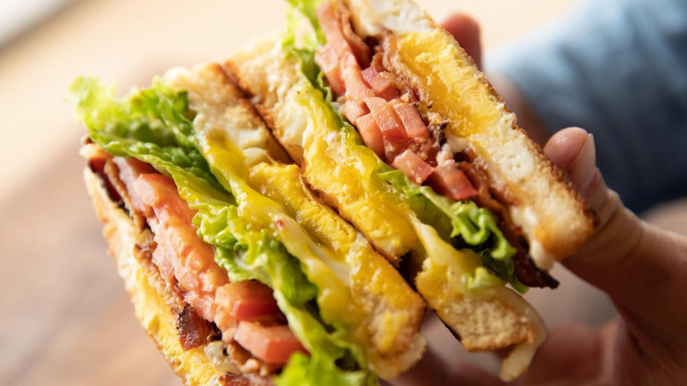

Egg-in-a-Hole Sandwich
Ingredients
- 6 slices thick-cut peppered bacon
- 1/4 cup mayonnaise
- Jalapeño-style hot sauce, as needed
- Kosher salt and freshly ground black pepper
- 4 slices Texas toast
- 4 tablespoons salted butter
- 4 large eggs
- 4 slices pepper jack cheese
- 1 small tomato, sliced
- Green leaf lettuce, for topping
Directions
- In a large cast-iron skillet over medium heat,
cook the bacon until crisp, 12 to 14 minutes.
Remove to a plate and set aside.
Drain the grease from the skillet but do not clean.
When cool enough to handle, tear the bacon slices in half.
- Meanwhile, mix the mayonnaise and hot sauce to taste in a small bowl. Season with salt and pepper.
- sing a biscuit cutter or the rim of a glass, cut a hole in the center of each Texas toast slice.
- Melt 2 tablespoons of the butter in the bacon skillet and add 2 of the Texas toast slices. Toast the bread slightly,
1 to 2 minutes. Crack an egg into the hole in each piece of toast and sprinkle the eggs with salt and pepper.
Cook the eggs until set on the bottom, 2 to 3 minutes. Using a spatula, carefully flip the toast with the egg,
season the other side and spread with the mayonnaise mixture.
Top each with a slice of cheese to slightly melt and cook until the egg is the desired doneness.
Remove to a cutting board and repeat with the remaining butter, toast, eggs, mayo mixture and cheese.
- To build the sandwiches, divide the bacon between 2 of the egg-in-a-hole toast pieces,
on top of the cheese. Top each with some tomato slices and lettuce,
then top with a remaining egg-in-a-hole toast piece.
Serve immediately or wrap in foil to keep warm.
footnetwork.com